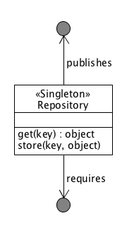
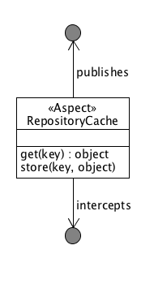
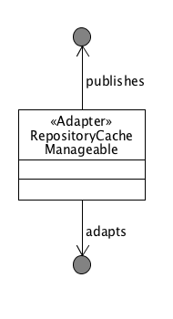
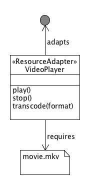

Dependency Manager - Design Patterns
This section lists a couple of design patterns as they can be applied in an OSGi context.
Singleton Service¶
Provides a service as long as its dependencies are resolved.
Motivation¶
In a dynamic framework, services can come and go. Components that publish a service are often themselves dependent on other services to perform their task. In such cases, they have a dependency on those services and it makes sense to only publish their own services when these dependencies are available. Being able to declare such dependencies in code ensures consistent life cycle behavior.
Structure¶

Code Example¶
public class Activator extends DependencyActivatorBase { public void init(BundleContext context, DependencyManager manager) throws Exception { manager.add(createComponent() .setInterface(UserStore.class, new Properties() ) .setImplementation(UserStoreImpl.class) .add(createServiceDependency() .setService(Store.class) .setRequired(true) ) .add(createServiceDependency() .setService(LogService.class) .setRequired(false) ) ); } public void destroy(BundleContext context, DependencyManager manager) throws Exception {} }
Aspect Service¶
Provides an aspect on top of a specific type of service.
Motivation¶
In aspect oriented programming, supporting functions are isolated from the main application's business logic. This increases modularity at the source level by allowing the separation of cross-cutting concerns. In OSGi we want to extend this modularity to the runtime, therefore we implement aspects to work on certain services, where the aspect itself publishes that same service but (usually) with a higher priority. This allows you to dynamically add and remove aspects.
Structure¶

Code Example¶
public class Activator extends DependencyActivatorBase { public void init(BundleContext context, DependencyManager manager) throws Exception { manager.add(createAspectService(Manageable.class, "(monitor=true)", 50) .setImplementation(ManageableMonitor.class) ); } public void destroy(BundleContext context, DependencyManager manager) throws Exception {} } public interface Manageable { public void setProperty(String key, String value); } public class ManageableMonitor implements Manageable { private volatile Manageable m_manageable; public void setProperty(String key, String value) { System.out.println("Someone set " + key + " to " + value); m_manageable.setProperty(key, value); } }
Adapter Service¶
Provides an adapter for a specific type of service.
Motivation¶
Like with aspects, sometimes you want to create adapters for certain services, which add certain behavior that results in the publication of (in this case) a different service. Adapters can dynamically be added and removed and allow you to keep your basic services implementations clean and simple, adding extra features on top of them in a modular way.
Structure¶

Code Example¶
public class Activator extends DependencyActivatorBase { public void init(BundleContext context, DependencyManager manager) throws Exception { manager.add(createAdapterService(Manageable.class, "(publish=servlet)") .setInterface(HttpServlet.class.getName(), null) .setImplementation(ManageableServlet.class) ); } public void destroy(BundleContext context, DependencyManager manager) throws Exception {} } public interface Manageable { public void setProperty(String key, String value); } public class ManageableServlet implements HttpServlet { private volatile Manageable m_manageable; public void doPost(HttpRequest req, HttpResponse response) { String key = req.getProperty("key"); String value = req.getProperty("value"); m_manageable.setProperty(key, value); } }
Resource Adapter Service¶
Provides an adapter for a specific type of resource.
Motivation¶
Resource adapters are similar to normal adapters, but instead of requiring a service, they require a resource and provide a service on top of it. Resources are an abstraction that is introduced by the dependency manager, represented as a URL. They can be implemented to serve resources embedded in bundles, somewhere on a file system or in a content repository or database.
Structure¶

Temporal Dependency¶
Provides a proxy that hides the service dynamics of a dependency, even if it disappears for a short time.
Motivation¶
As a service consumer, you sometimes do not want to deal with the dynamics of services and the fact that they tend to go away for short periods of time whilst their hosting bundle gets updated. A temporal dependency provides you with a proxy that hides these dynamics and blocks your calls if you try to invoke a method on a service that is currently "updating". The maximum time to wait is configurable and you will get an exception if no new service becomes available before that time.
Structure¶
Null Object¶
Provides an implementation of an object that does nothing and can be used in the absence of the real object.
Motivation¶
When a component depends on a service, but the dependency is optional, it means that it will use this service when available, but it can still operate if it's not. Constantly checking in your code if a service is actually available tends to lead to code with a lot of "if (service != null) service.invoke();" constructions which do not help with code readability. Instead, the dependency manager offers you a mechanism where it will inject null objects for services that are currently not available so you can simply invoke methods on them that "do nothing".
Structure¶
Whiteboard¶
Handles listeners by leveraging the OSGi service registry to publish and look them up.
Motivation¶
The traditional model for dealing with listeners in Java needlessly complicates things in an OSGi context. Instead of having listeners registering themselves with the component that will invoke them on any change, a listener simply registers itself in the service registry and the component will do a lookup of all relevant services. This is explained in more detail on the OSGi.org wiki in the "Listeners considered harmful: the 'whiteboard' pattern" article.